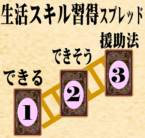
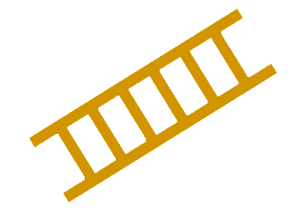

ヴィゴツキーの
発達の最近接領域を
応用しています
▲保育TAROT TOP
|
▲TAROT TOP
|
▲BLOG
|
▲Youtube
生活スキル習得スプレッド
(2～5歳児クラス)
A×B積を強調したプラス次元抽出
ブラウザに保存された事例と15次元ベクトル：
表示/非表示
★
(発達の最近接領域)用の15次元の値(-1.0～+1.0)は、ZPDマークのある、違うスプレッドでも使えます。

★
(発達の最近接領域)用の15次元の値(-1.0～+1.0)は、ZPDマークのある、違うスプレッドでも使えます。
【用途】
子どもの
生活スキルの援助方法
を考える。
【特徴】
ヴィゴツキーの
発達の最近接領域(Zone of Proximal Development)
の理論を応用。
着替え・排泄・食事などの特定スキルに絞り込んだシンプル構成
A(身体・運動)×B(認知・言語)次元の積空間で「できる／できそう／援助法」を3枚に凝縮。
【このスプレッドではAIに2回依頼します】
お子さんの様子の自由テキスト入力
→AI解析
AI提示の
発達プロファイルの値を確認し調整する
3枚のカードをひく
→AIによる
ZPD リーディング
で完結。
>>>
さらに説明を開く
選択プリセットNo
, →のVec
, loadkaisuu
, ②回転
, アンチ
, ③橋
, 最終Q
, 最終Qv
, ①計算
, ②計算
, ③計算
, top1
, top2
, top3
, top4
Step 1｜お子さんの様子を教えてください(
※個人を特定できる情報は含めない
でください)
まず、年齢を選んでください
年齢
:
↓選択↓
2歳
3歳
4歳
5歳
児クラス
※あとで年齢を変更すると、入力した文章はクリアされます
生活スキルのカテゴリーを選んでください
👕
着替え
袖通し・ボタン・ファスナーなど
🚽
排泄
尿意の気づき・タイミング・後始末
🍱
食事
スプーン・箸・こぼさず食べる
🖐
手洗い
石鹸・すすぎ・拭く手順の習得
✂
ハサミ
持ち方・直線・曲線切り
🚶
順番待ち
列に並ぶ・割り込まず待つ
🏃
スキップ
片足跳び・リズム・協調運動
🛌
休息
午睡・昼寝・眠れない
👟
靴
着脱・左右逆
🗣️
言葉
言葉が出ない・発音不明瞭
🪥
歯磨き
歯ブラシを噛む・嫌がる
⏰
生活リズム
不規則・夜更かし・遅い登園
👜
片付け・持ち物管理
片付け習慣・忘れ物
💡
理解力
指示が響かない・おゆうぎ苦手
👂
話を聞く・お集まり
座っていられない・話をきかない
🗺️
全部
下の「絞り込み」で、全ての事例を対象にする時はこちら
似た事例を探します
絞り込み：
運動・身体
｜
情緒・行動
｜
生活スキル
事例
: なるべく「状況が近い」と思う事例を選択。↓年齢は違っても大丈夫です。:
↓ ↓ 事例を選んでください ↓ ↓
お子さんの様子:
似てるかも？(↓リンククリックで/↑入力欄テキスト更新
※文章書きかけ注意
)：
✦ 発達プロファイルを生成する（プロンプト出力）
Step 2｜発達プロファイルを確認・調整
AIに渡すプロンプト(数値解析)：
📋 コピー
↓ ↓ ↓ ↓
AI依頼リンク集
代表的なものを集めました。どの会話型AIでも、このプロンプトを理解して数値を提案してくれます。
ChatGPT
Claude(クロード)
Google Gemini
Manus
perplexity
Qwen Chat
他に、リンクは貼れませんが、X(旧ツイッター)のGrok、Microsoft Copilot(コパイロット) 、でも動作します。
↓ ↓ ↓ ↓
ボタン有効化
AIが解析した15次元ベクトル数値を一括貼り付け
反映
例: 0.5,0.3,-0.2,0.2,0.9,0.1,0.2,-0.3,0.4,0.2,0.3,0.2,0.3,0.1,0.3
発達レーダー（15次元）
外周のA1などにマウスを乗せると値の詳細が表示されます。
🃏 カードを引く
非常ボタン（ボタンが無効で進めない時にクリック）
Step 3｜生活スキル習得スプレッド
✦ ZPDリーディングを依頼するプロンプトを出力
AIに渡すプロンプト：
📋 コピー
ここまでで完結です。
以下は計算などの詳細です。見なくても支障ありません。

1. 現在の発達段階
2. 発達の芽生え
3. 発達の壁
4. 発達の橋
今
少し先
足場かけ
目指したい育ちの方向
- - - - - - 最近接発達領域 - - - - - -
(Zone of Proximal Development)
Developmental Dynamics 4
ZPD 構造マップ
✦ ZPDリーディングを依頼するプロンプトを出力
AIに渡すプロンプト：
📋 コピー
最初からやり直す